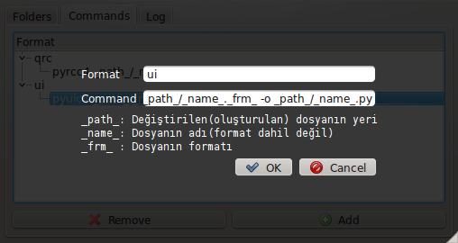

June 23, 2011 - Tagged as: python, tr.
Bugün çok sıkıldım öylesine birşeyler karalayacağım..
Sınav haftaları beklenenden çok farklı bir şekilde faydalı aslında. Sınav haftası geldiğinde birden bir odamı süpüresim geliyor mesela. Masamın tozunu alıyorum, bulaşıkları yıkıyorum falan. Mesela benim bu hafta 3 tane sınavım vardı ve şunu yaptım: 
Ne olduğuna gelirsek, kendim sürekli kullandığım basit bir scriptimi, daha esnek bir hale getirdim ve QT ile arayüz tasarladım. Programın yaptığı şey, gösterdiğim klasörleri(ve isteğe bağlı olarak onun alt klasörlerini) izleyerek, bir ekleme veya değişiklik(zaten olan bir dosyanın değiştirilmesi anlamında) olduğunda yine benim belirlediğim komutları dosyaya uyguluyor. Bunu yaparken, dosyanın formatına göre komutları giriyorum(şimdi aklıma geldi de, tüm formatlar için uygulanacak komutlar için bir ayar yapılabilir). Komutları girerken de, eklenen/değiştirilen dosyanın adını, formatını ve bulunduğu konumun tam adresini bir değişkende tutuyorum ve bu değişkenler komutta kullanılabiliyor. Örneğin yukarıdaki resimlerde kullandığım komutlardan biri pyrcc4 _path_/_name_._frm_ > _path_/../_name__rc.py. Bu komutta _path_ kısmı dosyanın bulunduğu konumun tam adresi, _name_ kısmı dosyanın adı ve _frm_ kısmı dosyanın formatıyla değiştiriliyor. Kapattığınızda task bar’a yerleşiyor ve dinlemeye geçiyor, daha sonra ordan çağırıp istediğiniz değişiklikleri yapabiliyorsunuz(komutlarda ve klasörlerde).
Bu arada 2. resimde gördüğünüz şey, Gökmen Göksel’in PDS’i yardımıyla hazırlandı.
Klasör ve komut ayalarını JSON ile saklıyorum. Python’da list ve dict veri yapılarının JSON ile saklamak çok kolay oluyor(JSON hakkında pek bilgim yok, diğer veri yapılarını da denemedim).
Bu arada QT hakkında birşeyler söyleyeyim, arayüz programlamadan nefret eden bana bile arayüz tasarımı yaptırdı bu kütüphane. Yine bu sınav haftasında, arşiv düzenleyicinin arayüzünü de GTK’dan QT’ye geçirmeye başladım(birkaç özellik de ekleyeceğim tabii). QT hakkında bir ara daha detaylı birşeyler yazmayı planlıyorum. Yine sınav haftalarından sınav haftalarına geliştirdiğim IRC istemcimi de QT ile yapıyorum. Arşiv düzenleyiciyi de birkaç güne adam eder(yeni özelliklerle beraber), github deposunu güncellerim herhalde.
Bu yukarıda resimlerini gördüğünüz programı da, dosya sistemi izlemeyle alakalı problemlerimi düzeltip, bir isim bulduğumda github’a koyacağım.
DÜZENLEME: Programın çalışan bir halini github’a koydum fakat henüz kurulabilir değil, yani dosyaları uygun bir yere taşımalı, daha sonra kaynak koddan çalıştırdığınız klasörü belirtmelisiniz. Kurulum scriptini herhalde birkaç güne hazırlarım.